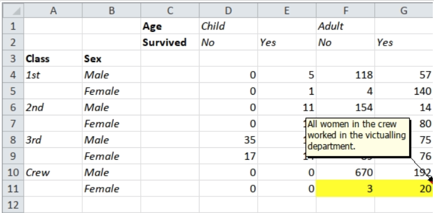
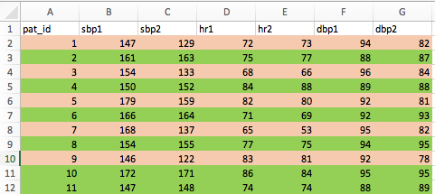

Sometimes well-meaning people encode variables in medical data as highlighting with colors. For example, a spreadsheet where the control patients are in the green rows, and the test patients are in the red rows. This should have been encoded as a study_arm variable with values control and test. How to fix this - the {tidyxl} package can get under the hood of an excel spreadsheet and extract this information.
So you, have unfortunately, agreed to try to analyze data in which a well-meaning person has encoded a variable as highlighter colors.
Yellow rows = control arm
Red rows = test arm
Is there an alternative to manually typing in a new variable, study_arm, with values “control” and “test”?
Fortunately, the {tidyxl} package can help, by getting under the hood and into the structure of this excel (xlsx) spreadsheet.
Let’s start with a simple titanic example, included in the {tidyxl} package. First load the tidyxl and readxl packages, and read in the excel file from the package.
# read in file from package
titanic <- system.file("extdata/titanic.xlsx", package = "tidyxl")
readxl::read_excel(titanic)
# A tibble: 10 x 7
...1 ...2 Age Child ...5 Adult ...7
<chr> <chr> <chr> <chr> <chr> <chr> <chr>
1 <NA> <NA> Survived No Yes No Yes
2 Class Sex <NA> <NA> <NA> <NA> <NA>
3 1st Male <NA> 0 5 118 57
4 <NA> Female <NA> 0 1 4 140
5 2nd Male <NA> 0 11 154 14
6 <NA> Female <NA> 0 13 13 80
7 3rd Male <NA> 35 13 387 75
8 <NA> Female <NA> 17 14 89 76
9 Crew Male <NA> 0 0 670 192
10 <NA> Female <NA> 0 0 3 20 We would like to identify and extract the cells highlighted in yellow. In this case, these are the cells in row 10 (row 11 in Excel, counting the header row), for the variables Adult and …7. But this is not obvious from the tibble.

So we will have to dig deeper into the xlsx file with the help of {tidyxl}. Let’s use the xlsx_cells() function to get more information on each cell, and store this in the object, x.
x <- xlsx_cells(titanic)
x
# A tibble: 60 x 21
sheet address row col is_blank data_type error logical numeric
<chr> <chr> <int> <int> <lgl> <chr> <chr> <lgl> <dbl>
1 Shee… C1 1 3 FALSE character <NA> NA NA
2 Shee… D1 1 4 FALSE character <NA> NA NA
3 Shee… E1 1 5 TRUE blank <NA> NA NA
4 Shee… F1 1 6 FALSE character <NA> NA NA
5 Shee… G1 1 7 TRUE blank <NA> NA NA
6 Shee… C2 2 3 FALSE character <NA> NA NA
7 Shee… D2 2 4 FALSE character <NA> NA NA
8 Shee… E2 2 5 FALSE character <NA> NA NA
9 Shee… F2 2 6 FALSE character <NA> NA NA
10 Shee… G2 2 7 FALSE character <NA> NA NA
# … with 50 more rows, and 12 more variables: date <dttm>,
# character <chr>, character_formatted <list>, formula <chr>,
# is_array <lgl>, formula_ref <chr>, formula_group <int>,
# comment <chr>, height <dbl>, width <dbl>, style_format <chr>,
# local_format_id <int>Now we have information on each cell (identified by address) in each sheet, with row and column information, details on data_type, formulas, comments, style_format, and the underlying data in separate columns by data type. This helps us find (and filter) for specific cells or rows.
But we also need to get at the formatting. This can be done with xls_formats() from {tidyxl}. Warning: the output will be very long and icky. Be prepared to scroll down a lot.
formats <- xlsx_formats(titanic)
formats
This gives you the formats object, which is of the list class. This is a highly nested data structure. You can explore formats by clicking on it in the Environment Tab, then a tab for formats will open up in the Source Pane. Click on the blue arrow to the left of formats in the Source Pane - then dig deeper into the nesting by clicking on the blue arrow in turn for
local, then
fill
patternFill
fgColor (foreground color)
rgb (the only one with content)
We are looking for the fill (highlighting) for the two cells highlighted in yellow.
This can be found programmatically with
formats$local$fill$patternFill$fgColor$rgb
[1] NA NA NA "FFFFFF00"which is honestly, quite hideous, but is just following the layers of nesting above that you clicked through in the Source Pane.
But a nested list is an efficient way to store information when there are a lot of empty cells. Most of the cells will not be highlighted, so the folks who wrote Excel used this approach. The output identifies one RGB highlighting color used as a fill in this spreadsheet, “FFFFFF00”, which is yellow.
The hard part is knowing where to hunt for the formatting you want to find. Digging around in the nested structure in the Source pane can help (especially if you have suggestions from the {tidyxl} web page). Once we have this color information, we can filter our x object to just the yellow-highlighted cells, with
x %>%
filter(local_format_id %in%
which(formats$local$fill$patternFill$fgColor$rgb == "FFFFFF00")) %>%
select(address, data_type) ->
location
location
# A tibble: 2 x 2
address data_type
<chr> <chr>
1 F11 numeric
2 G11 numeric This takes the x object, then filters it on the local_format_id variable for a local format in which the fill color is yellow (which in this case turns out to be local_format_id = 4). Then we select the address column to get the cells that have been highlighted in the spreadsheet (F11 and G11 in this case).
To get the highlighted values out, as these cells both contain numeric data, we can do the following:
x %>%
filter(address %in% location$address) %>%
select(address, numeric)
# A tibble: 2 x 2
address numeric
<chr> <dbl>
1 F11 3
2 G11 20So the highlighted values are 3 and 20.
Imagine a pilot trial of blood pressure medication with the study arm encoded as a highlighting color by row. Here is a picture of the original spreadsheet.

Let’s read in the excel file.
pilot_path <- here("_posts/2021-01-13-extracting-highlighting-as-data-from-excel/bp_pilot.xlsx")
pilot <- read_xlsx(pilot_path)
pilot
# A tibble: 11 x 7
pat_id sbp1 sbp2 hr1 hr2 dbp1 dbp2
<dbl> <dbl> <dbl> <dbl> <dbl> <dbl> <dbl>
1 1 147 129 72 73 94 82
2 2 161 163 75 77 88 87
3 3 154 133 68 66 96 84
4 4 150 152 84 88 89 88
5 5 179 159 82 80 92 81
6 6 166 164 71 69 92 93
7 7 168 137 65 53 95 82
8 8 154 155 77 75 94 95
9 9 146 122 83 81 92 78
10 10 172 171 86 84 95 95
11 11 147 148 74 74 88 89From this tibble, we can’t see which rows were coded as test (red) vs. control (green). Let’s follow the same approach - first we will extract cell data.
pilot_cells <- xlsx_cells(pilot_path)
pilot_cells
# A tibble: 84 x 21
sheet address row col is_blank data_type error logical numeric
<chr> <chr> <int> <int> <lgl> <chr> <chr> <lgl> <dbl>
1 Shee… A1 1 1 FALSE character <NA> NA NA
2 Shee… B1 1 2 FALSE character <NA> NA NA
3 Shee… C1 1 3 FALSE character <NA> NA NA
4 Shee… D1 1 4 FALSE character <NA> NA NA
5 Shee… E1 1 5 FALSE character <NA> NA NA
6 Shee… F1 1 6 FALSE character <NA> NA NA
7 Shee… G1 1 7 FALSE character <NA> NA NA
8 Shee… A2 2 1 FALSE numeric <NA> NA 1
9 Shee… B2 2 2 FALSE numeric <NA> NA 147
10 Shee… C2 2 3 FALSE numeric <NA> NA 129
# … with 74 more rows, and 12 more variables: date <dttm>,
# character <chr>, character_formatted <list>, formula <chr>,
# is_array <lgl>, formula_ref <chr>, formula_group <int>,
# comment <chr>, height <dbl>, width <dbl>, style_format <chr>,
# local_format_id <int>There are four different local_format_id values (1 through 4). But which is green, and which is red highlighting?
Let’s dig into the formats.
Extracting Formatting Data
pilot_formats <- xlsx_formats(pilot_path)
pilot_formats
Now open the pilot_formats object by clicking on it in the Environment Tab. In the source pane, explore the nested list by clicking on blue arrows for
local
fill
patternFill
fgColor
rgb
and you will see 3 options in rgb - NA, and 2 RGB colors.
Now let’s pull these with
pilot_formats$local$fill$patternFill$fgColor$rgb
[1] NA "FFED7D31" "FF92D050"Ignore the first FF, and the rest of the 2 strings represent a code for an RGB color. Go to https://www.colorhexa.com and type in the codes (prefix these with a hashtag) for #ED7D31 and then #92D050.
These two RGB colors are orangish-red and green, respectively.
So if the color “FFED7D31” is present in the cell formatting, that row is a trial participant in the test arm, and if the color “FF92D050”, that row is a trial participant in the control arm.
Now we can mutate to create a new variable, study_arm and fill it with “test” and “control”.
pilot_cells %>%
filter(local_format_id %in%
which(pilot_formats$local$fill$patternFill$fgColor$rgb == "FFED7D31")) %>%
select(address, row, data_type) %>%
filter(str_detect(address,"A")) %>%
mutate(tibblerow = row - 1) %>%
pull(tibblerow) ->
test_rows
test_rows
[1] 1 3 5 7 9Now we can use the test_rows vector to mutate the correct rows to “test” for a new variable, study_arm
pilot %>%
rownames_to_column(var = "rowname") %>%
mutate(study_arm =
case_when(rowname %in% test_rows ~ "test",
TRUE ~ "control")) %>%
select(rowname, sbp1:sbp2, dbp1:dbp2, study_arm)
# A tibble: 11 x 6
rowname sbp1 sbp2 dbp1 dbp2 study_arm
<chr> <dbl> <dbl> <dbl> <dbl> <chr>
1 1 147 129 94 82 test
2 2 161 163 88 87 control
3 3 154 133 96 84 test
4 4 150 152 89 88 control
5 5 179 159 92 81 test
6 6 166 164 92 93 control
7 7 168 137 95 82 test
8 8 154 155 94 95 control
9 9 146 122 92 78 test
10 10 172 171 95 95 control
11 11 147 148 88 89 control which does, in fact, match up with the original spreadsheet.
So if you are ever facing a spreadsheet where data is encoded as colors, hopefully this walk-through will help.
–
You can get more information about {tidyxl} and where to find formatting like bold, etc. here. The official pkgdown website and reference manual for {tidyxl} can be found here. You can unpack lots of badly assembled spreadsheets with the {tidyxl} and {unpivotr} packages. This is well beyond the scope of this post, but there are lots of worked examples, an online cookbook, and even screencasts.
This blog was created with the {distill} package. Distill is a publication format for scientific and technical writing, native to the web.
Learn more about using Distill at https://rstudio.github.io/distill.
For attribution, please cite this work as
Higgins (2021, Jan. 13). Medical R: Extracting Highlighting as Data from Excel Spreadsheets with {tidyxl}. Retrieved from https://higgi13425.github.io/posts/2021-01-13-extracting-highlighting-as-data-from-excel/
BibTeX citation
@misc{higgins2021extracting,
author = {Higgins, Peter},
title = {Medical R: Extracting Highlighting as Data from Excel Spreadsheets with {tidyxl}},
url = {https://higgi13425.github.io/posts/2021-01-13-extracting-highlighting-as-data-from-excel/},
year = {2021}
}